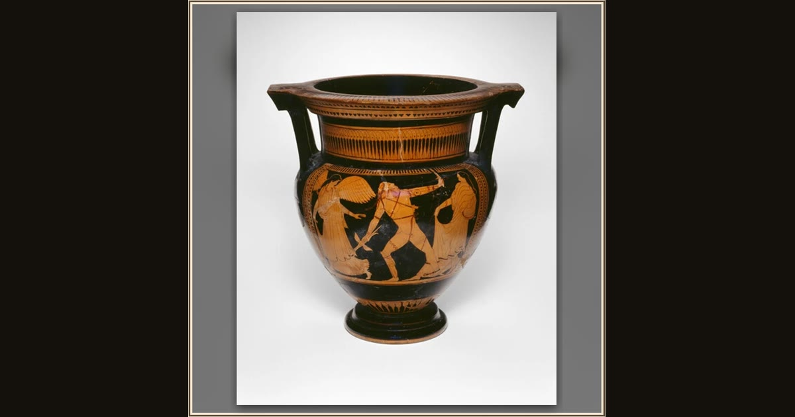

Column-Krater (Mixing Bowl)
Attributed to a Member of the Earlier Mannerist Group, Greek; Athens · about 460 BCE · The Art Institute of Chicago · Chicago, USA
The Greeks blended their wine with water in a big bowl like this one before a feast — you can picture it brimming in Alcinous’ hall, where Odysseus eats and drinks his fill before telling his long story. Its painting shows Zeus striking down the boastful king